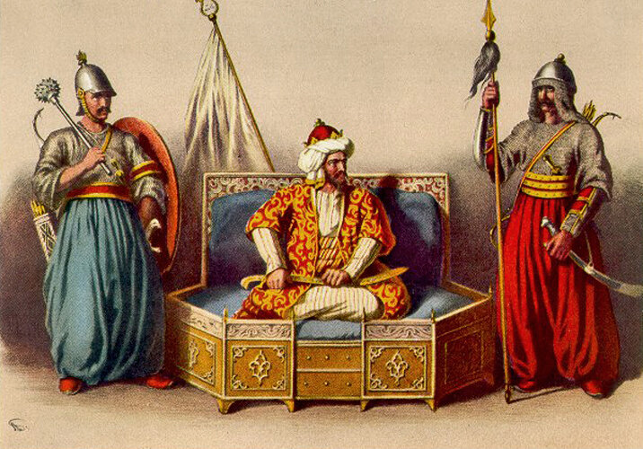

После нескольких попыток подкупа алжирского бейлербея, не давших результата, руководство испанских спецслужб решило действовать по-другому: если Улуджа Али невозможно купить, его надо убить. Политические убийства в XVI веке были заурядным явлением, убивали не только рядовых политиков, но и влиятельных аристократов, и даже глав государств. Такие монархи, как короли Франции Генрих III и Генрих IV, королева Наварры Иоанна III, принц Вильгельм Оранский, великий визирь Османской империи Мехмед Соколлу-Паша и длинный ряд других заметных фигур на политической сцене того времени закончили свою жизнь от рук убийц. Яд и кинжал были основными орудиями убийства, хотя иногда это были достаточно изощренные способы, вспомним хотя бы пару пропитанных ядом перчаток, которые использовала Екатерина Медичи для убийства Иоанны Наваррской (впрочем, эту версию из «Королевы Марго» Дюма не подтверждают современные исследователи, считая, что Иоанна умерла от туберкулеза). К турецким султанам убийцы подсылались так часто, что для их нейтрализации выработан был даже специальный этикет: любой иностранец, в том числе и посол, мог приблизиться к султану лишь в сопровождении двух охранников, которые держали гостя за руки.

Улудж Али-паша стал мишенью для наемных убийц сразу же после назначения на должность Главнокомандующего османским военным флотом и получения нового имени Кылыч Али. Впрочем, первая попытка убить капудан-пашу, как представляется, не была следствием внешнего заговора, а явилась продуктом разборок в высших кругах империи. В письме, датированном мартом 1574 года, агент испанской разведки докладывал в Мадрид, что имел место заговор на флагманской галере капудан-паши.

Турецкая галера. Образец турецкой каллиграфии. Миниатюра из манускрипта
Трое офицеров галеры из бывших христиан вошли в сговор с гребцами христианского происхождения с целью убить ночью адмирала, захватить галеру и на ней вернуться на родину. Правда, неясно, зачем они планировали убийство капудан-паши: побегу это бы не помогло, а лишь привлекло бы внимание всего османского флота и сделало побег невозможным. Так что скорее всего основной целью бунта был не побег, а как раз убийство Адмирала османского флота. Не обязательно его заказала испанская разведка: у Кылыч Али было много врагов в то время. Истины мы уже не узнаем, но последствия заговора известны хорошо: заговорщики были разоблачены еще до начала бунта, у них были вырваны ноздри, после чего они были казнены «путем различных видов (diverse sorti) пыток» .
Помимо испанского агента, об этой попытке убить капудан-пашу докладывал капеллан австрийского посольства Стефан Герлах, мемуары которого дошли до наших дней (GERLACH, S. Tagebuch. Frankfurt am Main, 1674). Он пишет, что заговорщики были пойманы в момент, когда они закладывали взрывчатку под постель адмирала. Как пишет Герлах, заговор был раскрыт вследствие предательства одного из заговорщиков, испанца по происхождению. Мемуарист отмечает, что часть заговорщиков была посажена на кол, остальные забиты палками до смерти. По иронии судьбы, среди казненных был и испанец-доносчик, на том основании, что он участвовал в мероприятиях на ранней стадии заговора.
Тот факт, что в мемуарах Герлаха ни слова не говорится о планах заговорщиков по захвату галеры, может свидетельствовать об истинной задаче всего мероприятия – устранении Адмирала турецкого флота. Хотя не обязательно за ним стояли секретные службы Испании. В отличие от следующей попытки ликвидировать Улудж Али-пашу, предпринятой испанской разведкой на следующий год: план акции 1575 года и ее финансирование нашли отражение в архивах секретных служб Габсбургов.
Для сбора информации в интересах проведения акции по устранению Улудж Али в Константинополь был послан некто Франциско Пелозо, агент вице-короля Сицилии. Не сумев раздобыть ничего полезного, агент вместо реально обоснованного плана операции предложил сомнительный вариант отравить Адмирала флота и его ближайших сподвижников. Пелолзо утверждал, что он легко сможет получить приглашение в дом адмирала, где осуществит задуманное, после чего для маскировки убийства взорвет расположенный поблизости склад боеприпасов (magazen de las municiones). Вице-король Сицилии не стал категорически отвергать план своего агента, хотя выразил сомнение в его осуществимости («мне известна разница между словами и делами», между palabra и exequición, заявил он). Вице-король снабдил Франциско греческим огнем (fuegos artificales), необходимым для диверсии, однако отказался дать ему яд (veneno artificial), сославших на его отсутствие на Сицилии. Пелозо отправился за ядом в Левант, где и канул без вести. И эта попытка испанской разведки устранить Улудж Али не имела завершения.
Для устранения строптивого адмирала привлекались не только агенты спецслужб, но и высокопоставленные дипломаты. Неофициальный посол Габсбургов в Стамбуле, которому было поручено ведение переговоров о мире между испанцами и османами, Джованни Марльяни писал своему королю, что Улудж Али – самый жесткий участник переговоров, и лучший способ решить все вопросы – избавиться от него. В письме вице-королю Неаполя посол пишет более конкретно: у него есть два человека в окружении Улудж Али – Синан и Хейдар, которые готовы совершить убийство своего хозяина. Вице-король не испытал никаких моральных проблем, обсуждая этот вопрос: Улудж Али может быть убит с чистой совестью (buena conciencia), так как он – вассал короля Филиппа II, предавший его. (Интересно, что тот же вице-король выступил против убийства агентами албанского посредника Бартоломео Брутти, препятствующего переговорам: Брутти не мог быть убит buena conciencia, так как он не являлся вассалом короля и не был ренегатом).
От насильственной смерти Адмирала османского флота спасло подписание в 1581 году великим визирем Мехмед Соколлу-Паша и послом Джованни Марльяни договора между Османской империей и Габсбургами. Договор был возобновлен в 1584 году и в 1587 году, году смерти Улудж Али. Улудж Али лишь однажды в эти годы выходил в море во главе флота, во время марокканской операции 1581 года. И хотя внутри османской иерархии он продолжал играть важную роль, Габсбургам он уже не угрожал, поэтому не являлся более мишенью для испанских спецслужб.